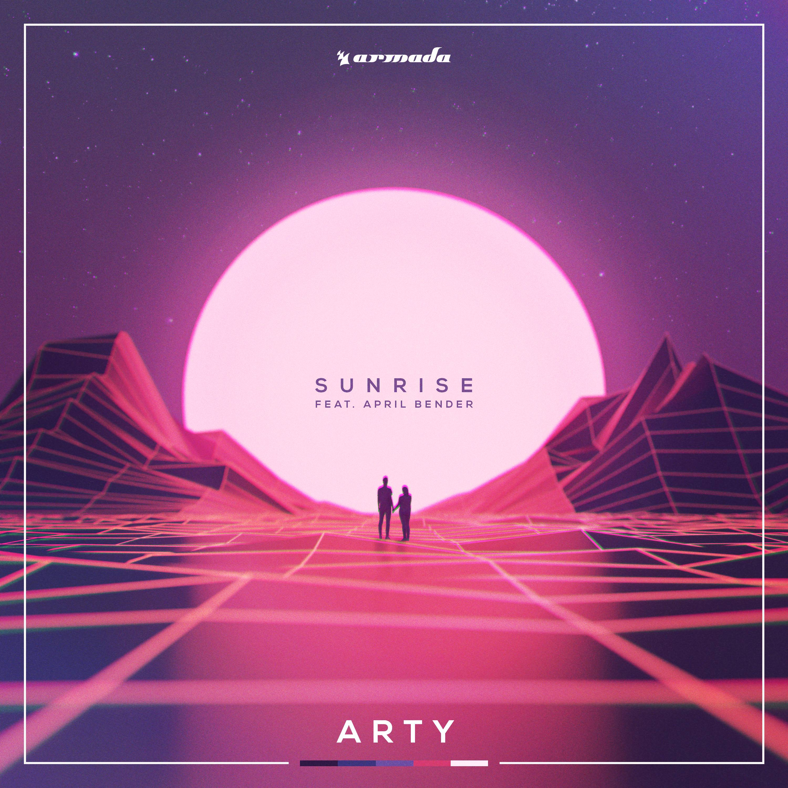

SUNRISE
BY MAYUR PILLAY

Sunrise album art
The purpose of this project was to create a short lyric animation of a song. I chose Sunrise by Arty as I found the words impactful and felt I could apply that emotion into my lyric animation video. Hope you enjoy!
LYRIC ANIMATION VIDEO